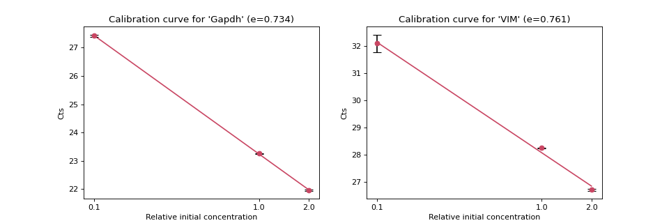
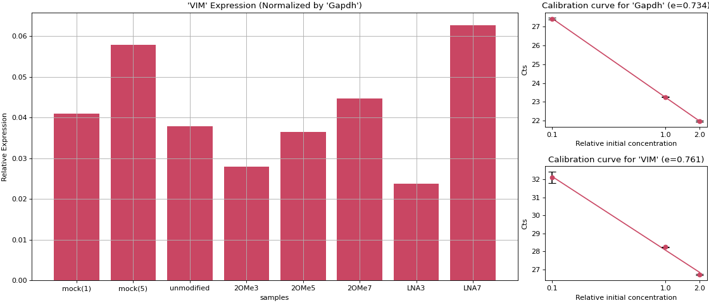

teilab.pcr module¶
A real-time polymerase chain reaction (real-time PCR) is a laboratory technique of molecular biology based on the polymerase chain reaction (PCR). It monitors the amplification of a targeted DNA molecule during the PCR (i.e., in real time), not at its end, as in conventional PCR. Real-time PCR can be used quantitatively (quantitative real-time PCR) and semi-quantitatively (i.e., above/below a certain amount of DNA molecules) (semi-quantitative real-time PCR).
Instructions¶
There are two basic quantification methods in real-time PCR, “Absolute Quantification” and “Relative Quantification” , but the underlying ideas are the same. As the template DNA increases \(2 (1 + e (\text{amplification efficiency}))\) times in one cycle of PCR, you can calculate the initial amount of DNA by detecting how many cycles of PCR were performed to reach a certain amount of DNA.
Absolute Quantification¶
The standard curve method for absolute quantification is similar to that for relative quantification, except the absolute quantities of the standards must first be known by some independent means.
Create several dilution series from a known concentration target template and create an accurate calibration curve that associates each target concentration with the \(Ct\) value.
From this calibration curve, we can determine the actual copy number of the target DNAs using \(Ct\) value.
Relative Quantification¶
A method to focus on the relative ratio of a calibrator (control) sample and the gene of interest (GOI). The following various calibration algorithms have been proposed.
1. ΔCt method¶
2. ΔΔCt method¶
It is necessary that the amplification efficiencies of REF (Reference Gene) and GOI (Gene of Interest) are the same, but this assumption is generally not met.
3. Calibration curve method¶
A calibration curve is drawn to determine the amplification efficiency of both REF and GOI, and this is used to standardize the difference in \(Ct\) of GOI contained in the target sample and the control sample with respect to REF. The amount of REF contained in the sample must be equal for all samples.
Let Amount (concentration) of initial template DNA be \([DNA]_0\), amplification efficiency be \(e\), and Number of PCR cycles be \(C\).
The relationship between the amount of DNA (\([DNA]\)) in the PCR product amplified by PCR and the number of cycles (\(C\)) is shown below:
Therefore, let the number of cycles \(C\) that reaches the threshold value be \(Ct\), and the DNA concentration at that time is \([DNA]_t\), the logarithm initial concentration is proportional to \(Ct\) when the primers (\(\fallingdotseq e\)) are the same, so this relationship can be represented by a calibration curve (linear line), and its slope (\(\text{slope}\)) is shown below:
Here, let \(E = 10^{\frac{-1}{slope}} = 1+e\), it can be written as follows
so, the expression level of the calibrator (control) sample and the target sample can be compared in a primer-independent manner.
Therefore, by comparing this value with REF (ex. Housekeeping gene), it is possible to correctly compare the amount of DNA between different samples.
Python Objects¶
- teilab.pcr.calibration_curve_plot(qualities: nptyping.types._ndarray.NDArray[Any, nptyping.types._number.Float], cts: nptyping.types._ndarray.NDArray[Any, Any, Any, nptyping.types._number.Float], target: str = '', color: str = '#c94663', ecolor: str = 'black', ax: Optional[matplotlib.axes._axes.Axes] = None, **kwargs) Tuple[matplotlib.axes._axes.Axes, float][source]¶
Plot a calibration curve.
- Parameters
qualities (NDArray[Any,float]) – Concentration of dilution series. shape=(n_qualities)
cts (NDArray[(Any,Any),float]) – Ct values for calibration. shape=(n_qualities, n_trials_calibrations)
target (str, optional) – The calibration target. Defaults to
"Calibration curve".color (str, optional) – The color of plot. Defaults to
"#c94663".ecolor (str, optional) – The color of Error Bar. Defaults to
"#c94663".ax (Optional[Axes], optional) – An instance of
Axes. Defaults toNone.
- Returns
An instance of
Axeswith calibration curve, and amplification efficiency.- Return type
Tuple[Axes,float]
- Raises
ValueError –
cts.shape[0]is not the same aslen(qualities).
>>> import numpy as np >>> from teilab.pcr import calibration_curve_plot >>> from teilab.utils import subplots_create >>> qualities = np.asarray([2, 1, 0.1]) >>> calibrations = np.asarray([ ... [[21.9904747, 21.94359016], [23.2647419, 23.24508476], [27.37600517, 27.46136856]], ... [[26.68031502, 26.75434494], [28.25722122, 28.239748 ], [31.77442169, 32.42930222]] >>> ]) >>> targets = ["Gapdh", "VIM"] >>> fig, axes = subplots_create(ncols=2, style="matplotlib", figsize=(12,4)) >>> for ax,cts,target in zip(axes, calibrations, targets): ... _ = calibration_curve_plot(qualities, cts, ax=ax, target=target) >>> fig.show()

- teilab.pcr.expression_ratio_plot(GOI_Cts: nptyping.types._ndarray.NDArray[Any, Any, nptyping.types._number.Float], REF_Cts: nptyping.types._ndarray.NDArray[Any, Any, nptyping.types._number.Float], e_GOI: float, e_REF: float, labels: List[str], name_GOI: str = '', name_REF: str = '', color: str = '#c94663', ax: Optional[matplotlib.axes._axes.Axes] = None, **kwargs) matplotlib.axes._axes.Axes[source]¶
Plot to compare Expression Ratios.
- Parameters
GOI_Cts (NDArray[(Any,Any),float]) – Threshold Cycles of GOI or REF. shape=(n_samples, n_trials_Cts)
REF_Cts (NDArray[(Any,Any),float]) – Threshold Cycles of GOI or REF. shape=(n_samples, n_trials_Cts)
e_GOI (float) – Efficiency of GOI or REF primer.
e_REF (float) – Efficiency of GOI or REF primer.
labels (List[str]) – [description]
name_GOI (str, optional) – The name of GOI or REF. Defaults to
"".name_REF (str, optional) – The name of GOI or REF. Defaults to
"".color (str, optional) – The color of plot. Defaults to
"#c94663".ax (Optional[Axes], optional) – An instance of
Axes. Defaults toNone.
- Returns
An instance of
Axeswith expression ratio plots.- Return type
Axes
>>> import numpy as np >>> import matplotlib.pyplot as plt >>> from matplotlib.gridspec import GridSpec >>> from teilab.pcr import expression_ratio_plot, calibration_curve_plot >>> fig = plt.figure(constrained_layout=True, figsize=(14,6)) >>> gs = GridSpec(nrows=2, ncols=4, figure=fig) >>> targets = ["Gapdh", "VIM"] >>> qualities = np.asarray([2, 1, 0.1]) >>> calibration_cts = np.asarray([ ... [[21.9904747, 21.94359016], [23.2647419, 23.24508476], [27.37600517, 27.46136856]], ... [[26.68031502, 26.75434494], [28.25722122, 28.239748 ], [31.77442169, 32.42930222]] >>> ]) >>> n_targets,n_qualities,n_trials_calibrations = calibration_cts.shape >>> print( ... "[Calibration]", ... f"{n_targets}_targets: {targets}", ... f"{n_qualities}_targets: {qualities}", ... f"n_trials : {n_trials_calibrations}", ... sep="\n" >>> ) >>> efficiencies = [] >>> for i,cts in enumerate(calibration_cts): ... ax, e = calibration_curve_plot(qualities, cts, ax=fig.add_subplot(gs[i,3]), target=targets[i]) ... efficiencies.append(e) >>> samples = ["mock(1)", "mock(5)", "unmodified", "2OMe3", "2OMe5", "2OMe7", "LNA3", "LNA7"] >>> Cts = np.asarray([ ... [[23.2647419, 23.24508476], [20.76102257, 20.77914238], [19.40455055, 19.52949905], [19.70094872, 19.60042572], [19.41954041, 19.13051605], [24.17935753, 21.98130798], [20.01245308, 20.02809715], [21.2081356, 20.1692791]], ... [[28.25722122, 28.239748], [25.16436958, 25.28390503], [24.71133995, 24.70510483], [25.37249184, 25.47054863], [24.72605515, 24.43961525], [27.91354942, 27.93320656], [26.08522797, 26.0483017], [24.96000481, 25.04871941]] >>> ]) >>> _,n_samples,n_trials_Cts = Cts.shape >>> print( ... "[Normalized Expression Ratio]", ... f"{n_samples}_samples: {samples}", ... f"n_trials : {n_trials_Cts}", ... sep="\n" >>> ) >>> ax = expression_ratio_plot(GOI_Cts=Cts[1], REF_Cts=Cts[0], e_GOI=efficiencies[1], e_REF=efficiencies[0], name_GOI="VIM", name_REF="Gapdh", labels=samples, ax=fig.add_subplot(gs[:,:3])) >>> fig.show()
